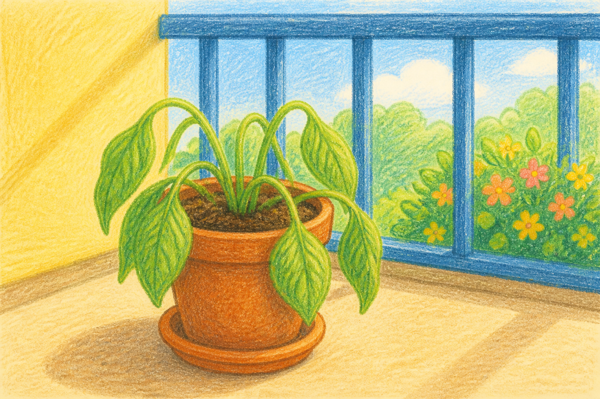
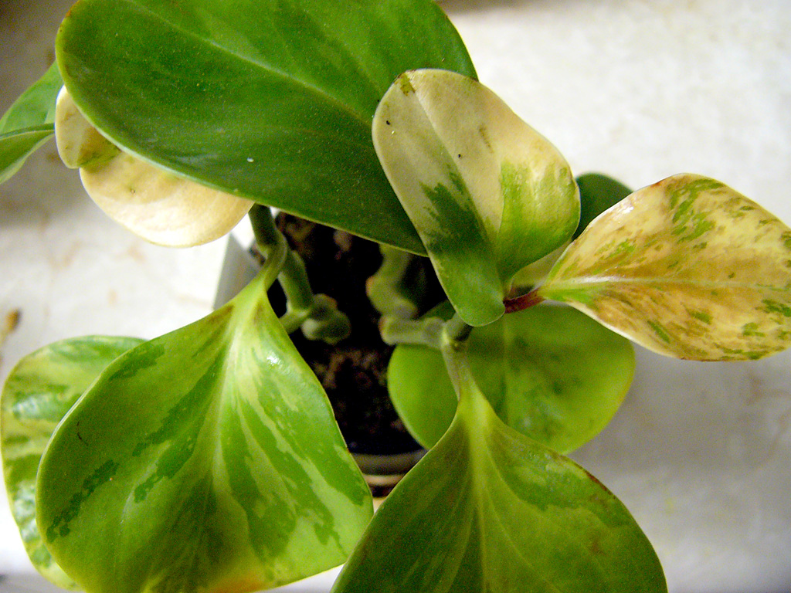
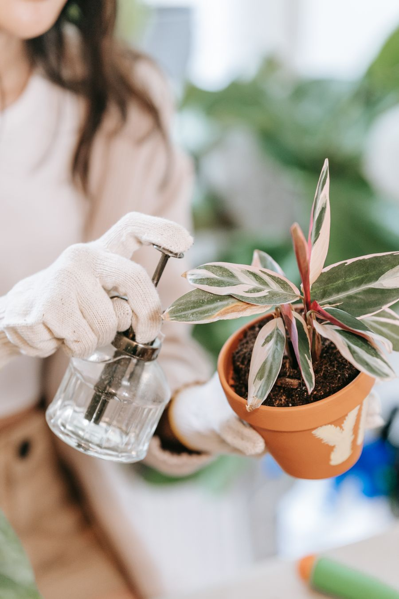
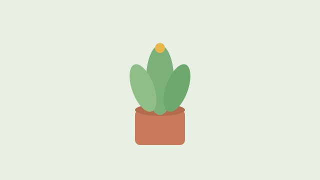

葉子軟掉了
一盆本來站得好好的植物，葉子垂下來。先看，不要急著澆水。


真的那邊是一盆真的快不行的植物。不是我們家那盆，可是葉子軟掉就是這樣。
先看土，再動手
三樣都看一看。每一樣都有圖畫，也有真的。
線索

現在要做什麼？
土還濕。用手指一下。猜錯沒關係。
嗯，再看土。它還濕，再澆會更喘。
對，先不要澆
葉子軟，不一定是渴。土還濕，根需要空氣。下次要記住什麼？
再想一下。手要先摸土，不要只看葉子。
明天去摸家裡那盆
不是分數。是回家找一盆植物，用手指按土。濕就先不要澆。過一晚再看葉子。

家裡真的摸一次，這件事才算做完。
回到家圖畫是畫的。「真的」是網路上的真實照片，不是電腦生的假照片。盆底積水那張我們還沒找到，文案有講。